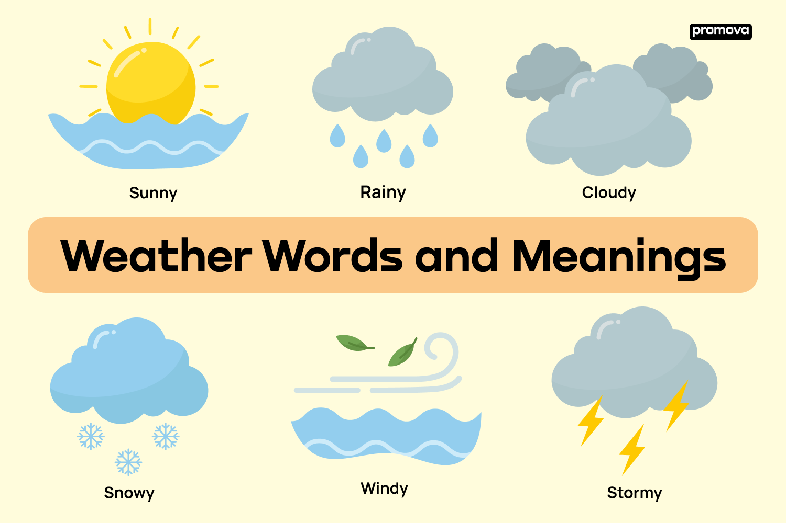

Understanding Weather Vocabulary
Weather plays a vital role in our daily lives. Understanding its terms can help you communicate effectively, especially if you're new to the English language. In this article, you will find essential weather vocabulary and meanings.

Exploring Weather Words and Meanings in English
General Weather Conditions
Understanding general weather conditions is crucial for everyday conversations. You'll often find these terms used in daily weather reports or casual discussions with friends. Familiarizing yourself with these weather words will make it easier for you to talk about the weather.
- Climate: the general weather conditions in an area over a long period; can be categorized into different types.
- Sunny: when the sun is shining brightly; clear skies and no clouds.
- Cloudy: filled with clouds; often indicates that the weather might become rainy.
- Rainy: wet weather; precipitation in the form of water droplets.
- Snowy: cold weather with falling or lying snow; often associated with winter.
- Windy: characterized by strong winds; can be cool or warm.
- Foggy: thick mist or haze; visibility is often reduced.
- Stormy: violent weather with rain, wind, thunder, etc.; often includes lightning.
- Clear: no clouds in the sky; often after a storm or rainy period.
- Overcast: covered with clouds; no sun is visible.
- Chilly: quite cold; cooler than what might be comfortable.
- Mild: moderate in temperature; neither hot nor cold.
- Sleet: often occurs when rain freezes as it falls.
- Drizzle: light rain; smaller droplets that often persist for extended periods.
Weather Forecasting Terms
Weather forecasting terms are essential for interpreting weather predictions and understanding meteorological concepts. As you learn these weather words, you will find it easier to comprehend forecasts in English, whether on TV, online, or in newspapers.
- Forecast: prediction of weather; often given by meteorologists.
- Temperature: measurement of heat or cold; measured in degrees Fahrenheit or Celsius.
- Humidity: the amount of moisture in the air; can make the weather feel hotter or cooler.
- Precipitation: any form of water falling from the sky, including rain, snow, sleet, etc.
- Meteorology: the scientific study of the atmosphere and weather; meteorologists are the people who study this field.
- Heatwave: an extended period of unusually hot weather; often in summer.
- Cold front: boundary of an advancing mass of cold air; associated with cooler weather.
- High pressure: weather conditions with dry, clear skies; often associated with fair weather.
- Low pressure: weather conditions with wet, cloudy skies; often associated with storms.
- Barometer: an instrument measuring atmospheric pressure; used in weather forecasting.
- Gale: very strong wind; usually from 34 to 40 knots.
- Visibility: the distance one can clearly see; often reduced in conditions like fog.
- Dew point: the temperature at which air becomes saturated with moisture; related to humidity.
Extreme Weather Conditions
The terms related to extreme weather conditions are vital when discussing or preparing for severe weather events. These words might appear in weather warnings, emergency broadcasts, or news reports. By knowing these terms, you can better comprehend critical weather information in English.
- Hurricane: a tropical storm with violent wind; can cause severe damage.
- Tornado: a mobile, destructive vortex of violently rotating winds; associated with thunderstorms.
- Drought: a prolonged period of abnormally low rainfall; a shortage of water.
- Flood: an overflow of a large amount of water; often causes destruction.
- Blizzard: a severe snowstorm with strong winds; leads to poor visibility.
- Earthquake: shaking and vibration at the surface of the earth; not a weather condition but often included in emergency broadcasts.
- Thunderstorm: a storm with thunder and lightning; often accompanied by heavy rain.
- Lightning: a sudden electrical discharge from a thunderstorm; results in a visible flash.
- Tsunami: large ocean wave caused by an underwater earthquake or volcanic eruption; not weather-related but can be a natural disaster.
- Heat index: a measure of how hot it feels when relative humidity is factored with the actual air temperature.
- Cyclone: a system of winds rotating inwards; in the Northern Hemisphere, they rotate counterclockwise.
- Hail: balls or lumps of ice that fall from clouds; often occurs during severe thunderstorms.
Learning these extreme weather words helps you to stay informed. These terms might seem complex at first, but with practice, they'll become an essential part of your English weather vocabulary.
Seasonal and Climate Terms
The vocabulary related to seasons and climate is valuable for describing the general weather patterns in different parts of the world. These words can help you communicate about seasonal changes and climatic conditions in various regions.
- Tropical: relating to the regions near the equator; usually hot and humid.
- Arctic: pertaining to the areas around the North Pole; extremely cold and icy.
- Monsoon: a seasonal wind, often bringing heavy rainfall; common in parts of Asia.
- Equinox: time or date at which the sun crosses the celestial equator; day and night are of equal length.
- Solstice: time or date when the sun reaches its maximum or minimum declination; the longest or the shortest day of the year.
- Polar: relating to the North or South Pole; extremely cold climates.
- Temperate: a climate characterized by mild temperatures; neither extremely hot nor cold.
- Arid: having little or no rain; extremely dry, often associated with deserts.
You've now expanded your vocabulary for weather with terms related to seasons and climate. Whether you're describing your favorite season or the climate of a particular place, these words will enhance your ability to communicate effectively.
Idioms Related to Weather
Idioms are expressions that don't literally mean what they say but have a metaphorical meaning. Here are some weather-related idioms that you might find interesting:
- "Under the weather": feeling ill or in low spirits. (e.g., "I'm feeling a bit under the weather today, so I'll stay home from work.")
- "Break the ice": to initiate a conversation or create a more friendly environment. (e.g., "He told a joke to break the ice at the beginning of his speech.")
- "It's raining cats and dogs": raining very heavily. (e.g., "You'll need an umbrella; it's raining cats and dogs out there!")
- "Every cloud has a silver lining": every bad situation has some positive aspect to it. (e.g., "I lost my job, but I found a better one soon after. Every cloud has a silver lining.")
- "A storm in a teacup": a lot of unnecessary anger and worry about a matter that is not important. (e.g., "They were arguing about who should wash the dishes. It was just a storm in a teacup.")
- "Steal someone's thunder": to take the attention and praise away from someone else's achievement by doing something similar or better. (e.g., "She was the star of the show, but her younger sister's performance stole her thunder.")
- "Calm before the storm": a quiet period just before a great activity or trouble. (e.g., "The meeting was going smoothly, but it was just the calm before the storm, as the disagreement started soon after.")
These idioms are common in English-speaking cultures and are often used in conversation to convey feelings or describe situations metaphorically, using weather-related terms.
Conclusion
Understanding the weather vocabulary is essential for daily communication. With these terms, you can better understand weather reports in English, engage in conversations about the weather, and prepare for various weather conditions.